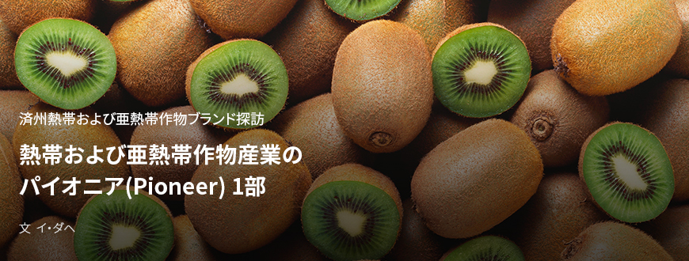
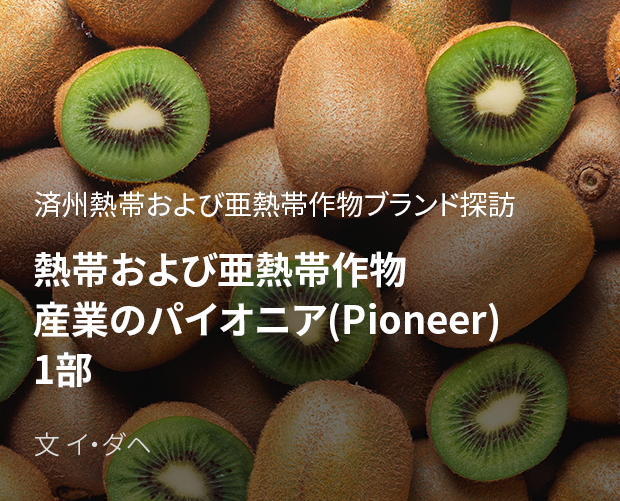
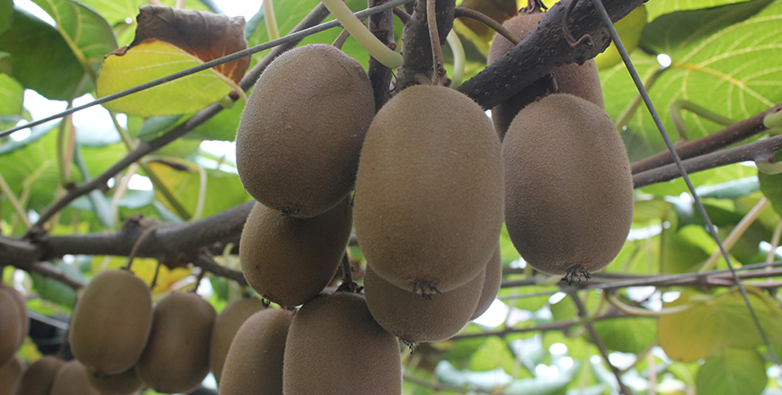
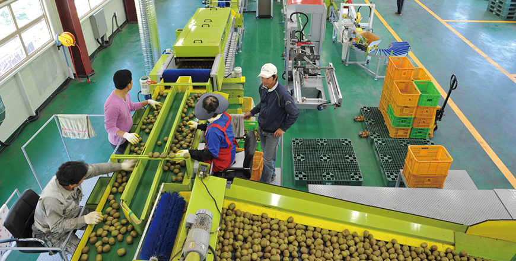
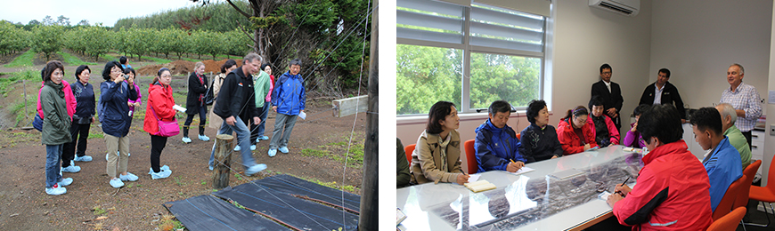
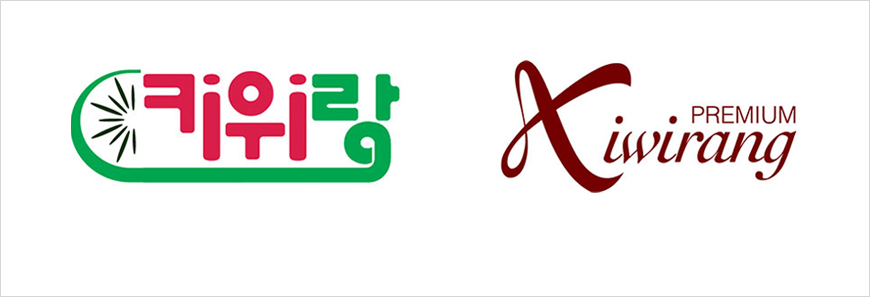

기획취재콘텐츠
- Home
- 제주라이프
- 기획취재콘텐츠
熱帯および亜熱帯作物産業のパイオニア(Pioneer) 1部새로운 글




済州の熱帯および亜熱帯作物の歴史は韓国の伝統作物に比べその歴史が浅い。それだけに実験的であると同時に可能性を秘めている。実験的作物を栽培してそれを産業化するためのチャレンジを止めない農家と革新家の存在こそが済州における熱帯および亜熱帯作物産業を実現したのだ。専門家の研究、済州道の支援に基づいて新しいマーケットを開拓する開拓者、熱帯および亜熱帯作物産業のパイオニア(Pioneer)の話を聞いてみた。
世界一のキウイブランドを目指して、漢拏ゴールド営農組合法人
キウイはマタタビ科のつる性落葉果樹で、韓国では知名度が高く消費が多い亜熱帯果樹の代表である。キウイは年平均気温が14℃以上の地域で安全に栽培できるため、韓国では南部地域を中心に栽培している。

- ⓒ漢拏ゴールド営農組合法人 -
済州道では一部農家を中心に1974年からキウイ栽培を開始した。1994年までは主に露地栽培で行っていたが、病虫害や台風被害のため施設栽培に切り替えた。2004年以降は、ニュージーランド・ゼスプリ社のゴールドキウイ契約栽培と韓国産ゴールドキウイ支援政策により施設でのキウイ栽培面積が拡大、済州地域ではみかんに次ぐ第2の果樹で定着している。済州におけるキウイの生産面積は2001年から2018年までに188%、農家号数は237%増加し、2018年基準の粗収入は31,119百万ウォンで、その他果樹の全体粗収入49,009百万ウォンの64%に達する。キウイが済州で第2の果樹として定着するまでは品種開発、栽培技術能力の確保、農家の組織化による収益性の堤高など多様な取り組みがあったのだ。
- 漢拏ゴールド営農組合法人流通センターの全景 ⓒ漢拏ゴールド営農組合法人 -
漢拏ゴールド営農組合法人は2008年に会員9名でスタートし現在は230以上の農家が組合員として所属している。漢拏ゴールド営農組合は、キウイの種子から消費者の食卓に上がるキウイの商品化に至るまでの全プロセスにおける農家との共同発展構造を構築している。漢拏ゴールド営農組合法人で主に生産しているキウイの品種は漢拏ゴールドとジェシーゴールド。漢拏ゴールドとジェシーゴールドは、農村振興庁温暖化対応研究所と済州農業技術院が協力して韓国の生育環境に合わせて開発した韓国産キウイ品種である。組合は2010年に漢拏ゴールドキウイ、2014年にスイートゴールドキウイ品種の専用実施権を農村振興庁に登録、生産および販売権を確保して2013年には6,600㎡規模の花粉センターを竣工して雄花の花粉を安定的に供給するインフラを整備した。漢拏ゴールド営農組合法人から農家に供給する花粉は年間100kgを超えている。2017年には漢拏ゴールド営農組合法人で使用する花粉全量の完全国産化に成功して経営費削減に貢献している。
- 漢拏ゴールド営農組合花粉センターの全景 ⓒ漢拏ゴールド営農組合法人 -

- 漢拏ゴールド営農組合選果場内部の様子 ⓒ漢拏ゴールド営農組合法人 -
また高品質のキウイ品種を供給し、同時に農家の生産能力拡大および技術の上方平準化を目指して多様なプログラムを運営している。農家同士で技術情報を交流するチャンスを設け、農家コンサルティングとキウイ栽培能力強化の教育も実施する。2012年には組合員と役員がニュージーランドを訪ねて現地で教育を受け、キウイ専門家を韓国に招いて農家教育プログラムを運営したこともある。

- ニュージーランド訪問教育当時の様子 ⓒ漢拏ゴールド営農組合法人 -
こうして漢拏ゴールド営農組合法人で生産した高品質のキウイは、すべて共同選別・共同出荷により販売し、その代金は共同計算を原則としている。漢拏ゴールド営農組合法人で開発された韓国産キウイブランドの「キウイラン」で一貫して高品質のキウイを消費者の食卓に届けるため、独自の選別および品質管理基準を定め、韓国および海外輸出先における残留農薬基準表などを制作して農家に配布する。

- キウイラン(左)、プレミアムキウイラン(右)のロゴ ⓒ漢拏ゴールド営農組合法人 -
優秀な種子を維持し、生産と流通の全プロセスでの上方平準化に向けて努めた結果、漢拏ゴールド営農組合法人は高品質の果物に認められ2010年に優秀品種賞、ウトゥム農産物展示会銅賞などの受賞に続き、2014年には国立農産物品質管理院により農産物優秀管理施設に指定された。同年、済州大学からの農産物優秀管理認証も取得した。
韓国はもちろん海外市場でもその優秀さを証明している。2015年10月のシンガポールを皮切りに香港、マレーシア、日本などにキウイを輸出している。漢拏ゴールド営農組合法人は2019年産キウイで合計148トン、約65億ウォンの輸出成果を出したが、それは全国キウイ輸出量の38%、輸出額の51%に達する数字だ。とくに熱帯および亜熱帯果樹の主産地である東南アジアにキウイを輸出したことは象徴的だといえる。
- 漢ゴールドキウイの輸出式 ⓒ漢拏ゴールド営農組合法人 -
海外市場に済州産キウイの優秀さを証明し輸出競争力を確保するために、漢拏ゴールド営農組合法人はGLOBAL G.A.P.認証を獲得するための専用の営農管理台帳を普及し、認証対象農家の訪問コンサルティングと全農家対象の教育を実施した。また、国別に好まれるキウイ品種と包装単位などを調べて積極的に反映した。これらの努力に基づいて輸出成果をあげて輸出企業としての能力を強化した結果、漢拏ゴールド営農組合法人は「2020年輸出先導組織育成事業」に新規指定された。
漢拏ゴールド営農組合法人は、農村振興庁が開発した輸出戦略品種である漢拏スイートを前面に出して海外輸出市場をさらに拡張する計画だ。現在輸出している東南アジア諸国の他に国とインドなど多様な海外市場を開拓して、ニュージーランドを超えて世界最高のキウイブランドへと成長するのが目標である。
이전글
다음글